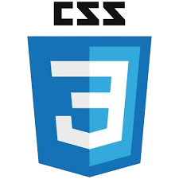
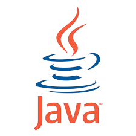
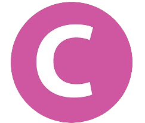
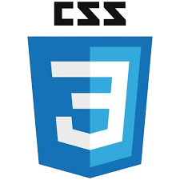
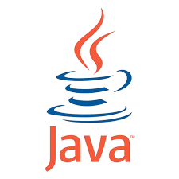
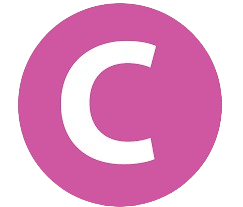

Olá! Eu Sou
Desenvolvedora Front-End
Graduada em Ciências Econômicas pela Universidade Católica da Bahia. Pós-Graduada em Planejamento Urbano e Gestão Pública. Desenvolvedora Web, atualmente estou no 3º semestre do curso Técnico em Desenvolvimento de Sistemas.
Sobre Mim
Objetivos
Utilizar o conhecimento obtido no curso Técnico de Desenvolvimento de Sistemas e a experiência em Finanças Públicas para especializar-me como Analista de Dados. Além disso, desejo desenvolver projetos digitais focados na inclusão digital de grupos 50+.
Habilidades
CRIATIVIDADE: Capacidade de inovar e desenvolver soluções originais para desafios técnicos e de design.
TRABALHO EM EQUIPE: Habilidade para colaborar de forma eficiente com colegas de diferentes áreas, visando alcançar objetivos comuns.
ATITUDE PROATIVA: Compromisso com a melhoria contínua, buscando sempre aprender e se aperfeiçoar.
PENSAMENTO ANALÍTICO: Facilidade em interpretar dados e informações para tomar decisões embasadas.
Cursos
CURSO JAVA BÁSICO: Tribunal de Justiça do Estado da Bahia, no período de abril de 2024 a maio de 2024.
DESENVOLVIMENTO WEB EM PYTHON: Projeto ElasNaTech em parceria com a JA Brasil, CCR e IBM no período de abril de 2023 a novembro de 2023.
SCRUM NO CONTEXTO DO SERVIÇO PÚBLICO: Escola Nacional de Administração Pública, em setembro de 2023.
INTERMEDIARY ENGLISH: Núcleo Permanente de Extensão em Letras - NUPEL/UFBA, no período de janeiro de 2019 a dezembro de 2021.
Experiência
TRIBUNAL DE JUSTIÇA DO ESTADO DA BAHIA: Finanças Públicas: execução orçamentária e financeira, desde 04 de junho 1991 até a presente data.
PROJETO ELASNATECH (JA Brasil, CCR e IBM): Projetos Web: Cardápio, Desafio ODS-Meta 13, Portfólio - no período de abril de 2023 a novembro de 2023.
Hobbies
Tenho paixão por praticar corrida de rua, e encontro harmonia ao tocar violão acústico. Além disso, aprecio a riqueza sonora do rock clássico e a sofisticação das músicas clássicas. Não menos importante, gosto de manter-me atualizada através de materiais que explorem temas relacionados à TI, política, e economia.
Tecnologias
 




